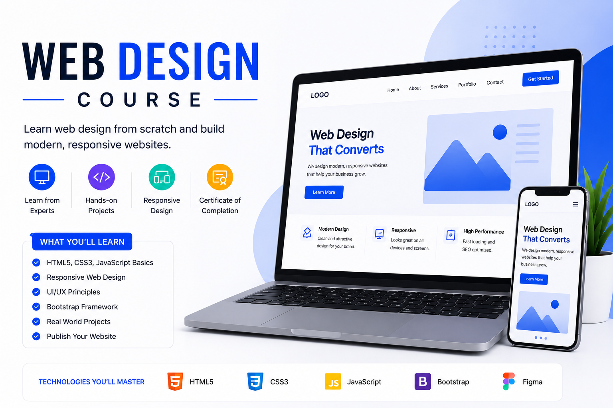
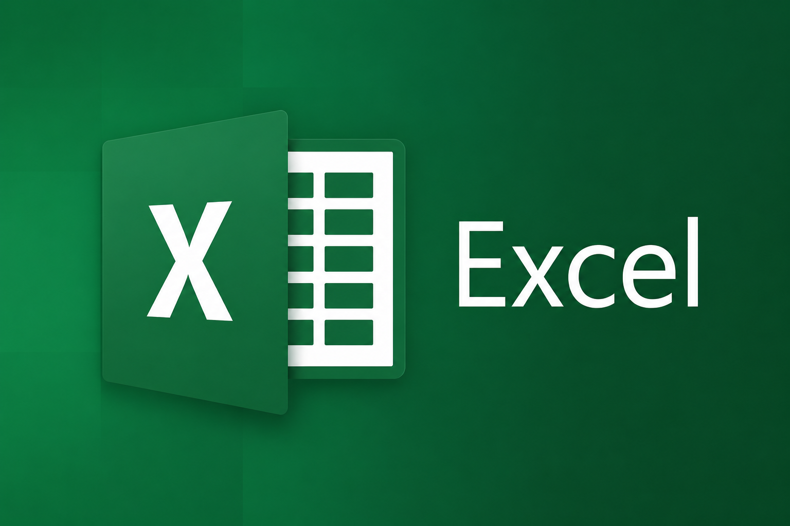
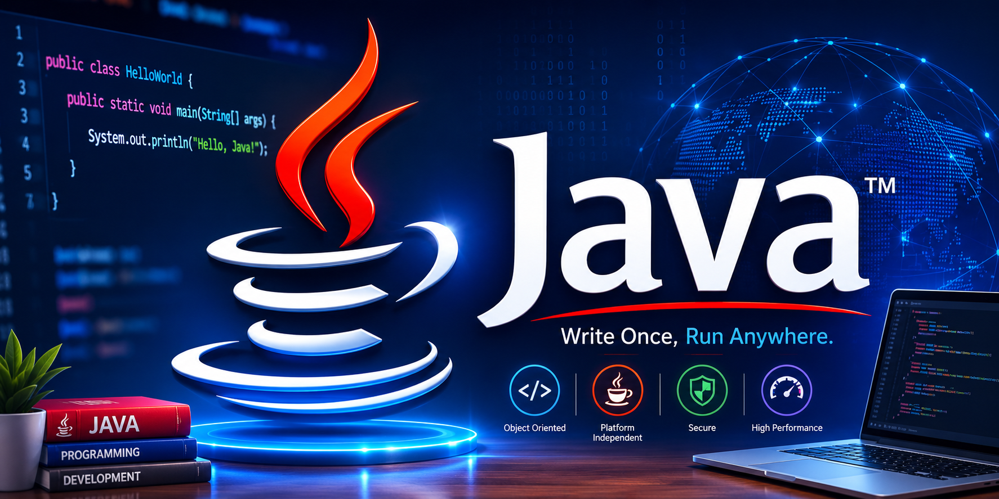
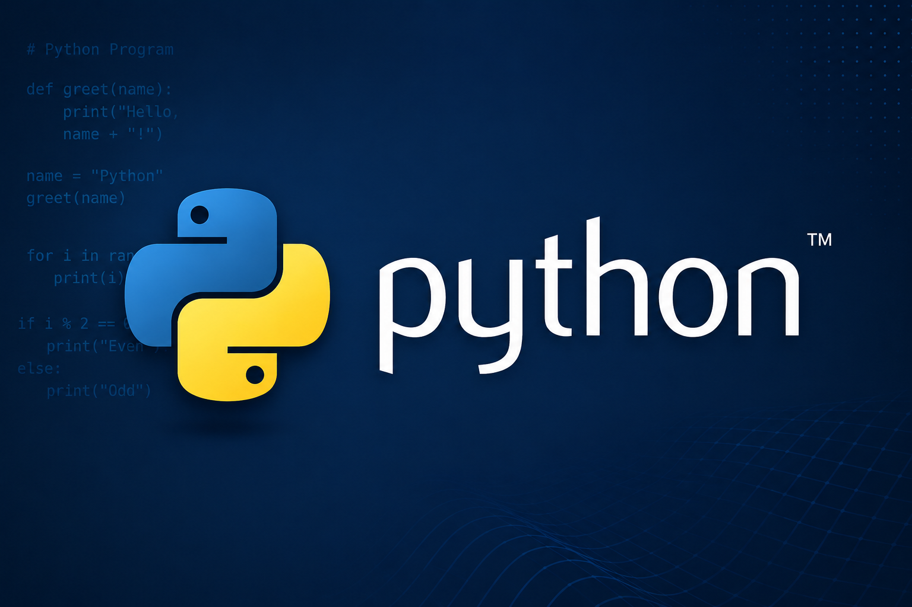
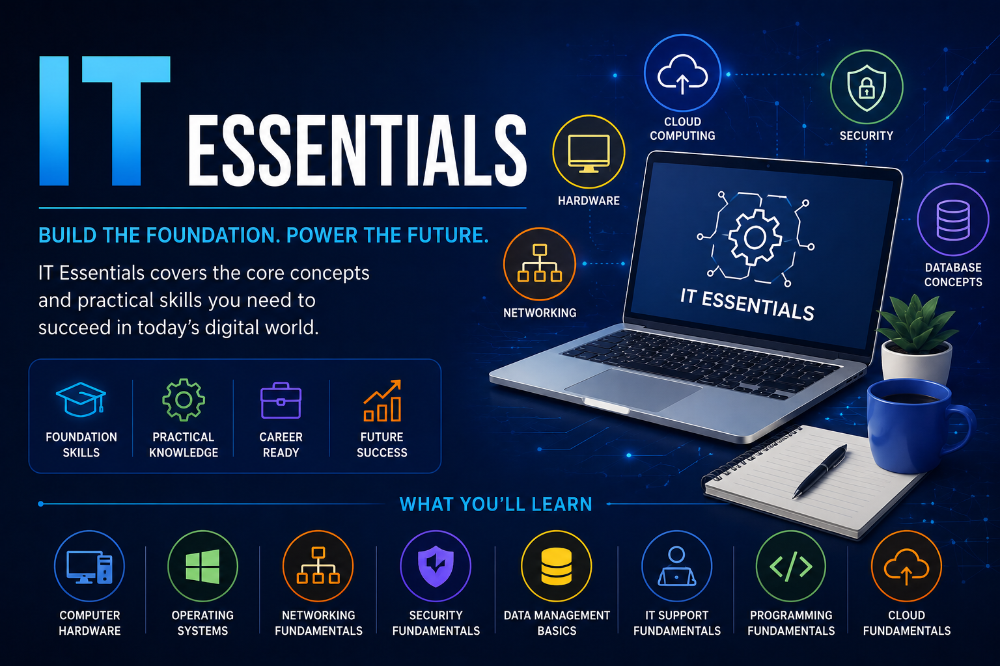
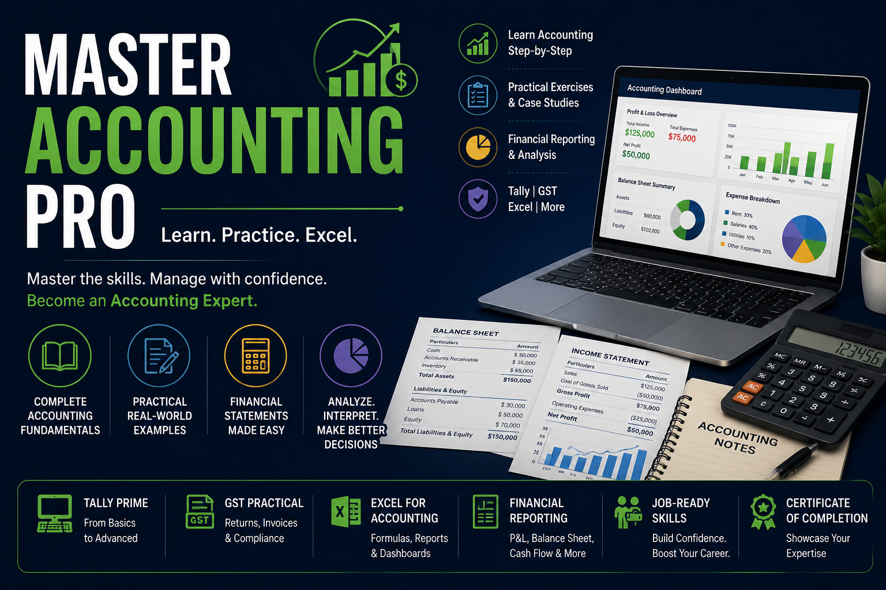
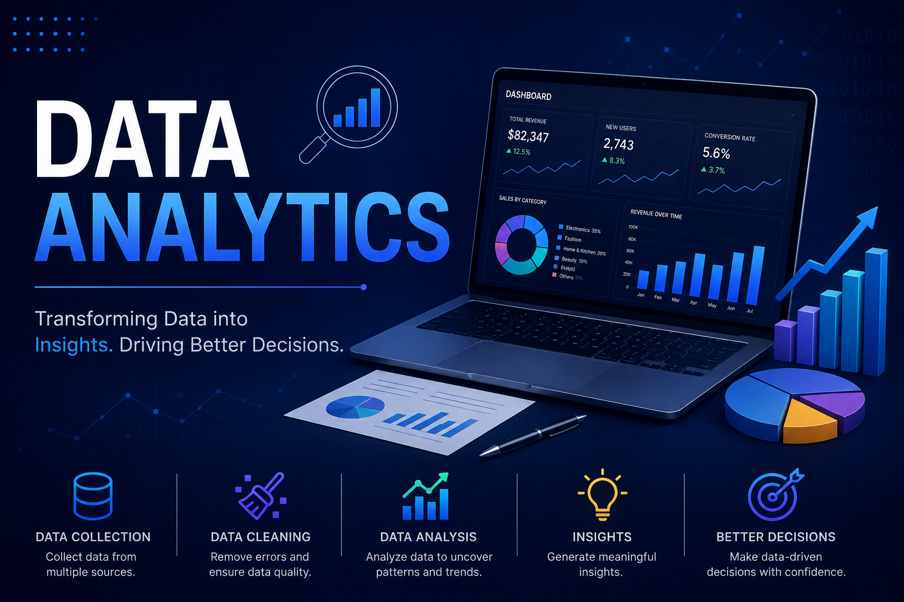

This hands-on course is designed to introduce school students to the exciting world of website design in a simple and engaging way. Students will learn how to create their own web pages using HTML and CSS, along with basic styling using Bootstrap. The course focuses on creativity, practical learning, and building confidence through mini projects and guided activities. By the end of the program, students will have developed a complete website they can proudly showcase. No prior coding knowledge is required—just curiosity and enthusiasm to learn!

Advanced Excel is a powerful tool used to analyze, organize, and manage data efficiently. It includes features such as formulas, functions, PivotTables, charts, conditional formatting, data validation, and automation with macros. Learning Advanced Excel helps improve productivity, supports better decision-making, and is an essential skill for careers in accounting, finance, business, data analysis, and administration.

Java is a powerful, object-oriented programming language used to develop web applications, desktop software, mobile apps, and enterprise systems. It is known for its platform independence through the "Write Once, Run Anywhere" principle, allowing Java programs to run on different operating systems. With its strong security, reliability, and vast library support, Java remains one of the most popular programming languages for beginners and professional developers alike.

Python is a simple, versatile, and high-level programming language widely used for web development, data analysis, artificial intelligence, automation, and software development. Its easy-to-read syntax makes it an excellent choice for beginners, while its powerful libraries and frameworks make it suitable for professional developers. Python is one of the most popular programming languages due to its flexibility, efficiency, and wide range of applications.

IT Essentials is a foundational course that introduces the core concepts of information technology, including computer hardware, software, operating systems, networking, cybersecurity, and troubleshooting. It helps learners develop practical skills to install, maintain, and repair computers while understanding essential IT support practices. This course is ideal for beginners who want to build a strong foundation for a career in the IT industry.

Master Accounting Pro is a comprehensive accounting course designed to develop practical skills in financial accounting, taxation, GST, payroll, and business accounting software. It provides hands-on training with industry-relevant tools and real-world accounting practices, helping learners manage financial records accurately and efficiently. This course is ideal for students, job seekers, and professionals looking to build a successful career in accounting and finance.

Data Analytics is the process of collecting, organizing, and analyzing data to uncover valuable insights and support better decision-making. This course teaches essential skills such as data visualization, statistical analysis, spreadsheet tools, SQL, and business intelligence concepts. It is ideal for students and professionals who want to build a career in data-driven industries and make informed business decisions.
Zoho Books is a cloud-based accounting software that helps businesses manage their finances with ease. This course covers invoicing, expense tracking, GST management, bank reconciliation, inventory, and financial reporting. It provides hands-on training to help learners efficiently manage business accounts and improve their accounting skills using Zoho Books.